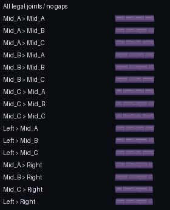

STAGE 03 COMPLETE / REVIEW CANDIDATE / STOPPED BEFORE STAGE 04
One flat, shallow standing surface
New 32-pixel PixelLab sidescroller tiles supply the capstone clusters. LibreSprite joins them into larger quiet slabs, normalizes their material colors, and creates a left end, three middle variants and a complete right end. The surface stays one horizontal strip; the vertical front fascia belongs to Stage 04.
Stage report · Measured checks · Approved Stage 02 review · Draft PR #203
Actual Unity preview
The wall, portrait recess and reference rails are unchanged. Cyan markers are temporary inspection aids: all three meet the same native y=180 contact plane. They are absent from the saved scene.
Full native Game View · Actual 1080x1920 Game View
Raw source and native cleanup
The specialized sidescroller endpoint has no style-image input. Current Rattlebones, supporting cast and approved wall pixels were checked locally; this stage does not claim uploaded image conditioning.
Immutable raw set · Original sidescroller metadata
Native pieces and joins
Four 32x12 pieces and one authored 30x12 right cap; no canvas clipping or resampling. Five opaque colors, with binary transparent corner pixels on the end caps.
All 16 legal neighbor pairings have identical joining profiles. The one-row 254x12 assembly has zero gaps, overlaps or clipped sprite rectangles.

All legal joints, nearest-neighbor 2x.Verified and stopped
Unity test: 1 passed, 0 failed. Required Unity validator passed. All five LibreSprite cels equal exported PNGs; actual 1x/3x Unity normal, marker and restored captures match exactly. Approved artwork and production scenes remain unchanged.
One sidescroller job: 3 generation equivalents measured by account balance. Cumulative 13/35; account remaining 1041.20. Stage 04 has not started. No merge or production battle integration.